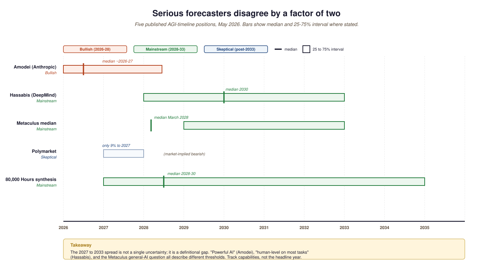

- Position the major 2026 timeline forecasters (Amodei, Hassabis, Metaculus, Polymarket, 80,000 Hours) on a common axis.
- Recognize the "definition shopping" trap that makes AGI-year forecasts look more disagreeable than the underlying capability forecasts are.
- Identify three empirical indicators that will arbitrate the 2027-2033 spectrum.
- Avoid conflating "capability frontier" with "deployment frontier" when reading timeline arguments.
This is the question every LLM textbook eventually has to address. The honest answer is that serious forecasters disagree by a factor of two on the year. Rather than pretend a single number captures the field's uncertainty, this section walks the spread, names the indicators that will narrow it, and locates the definitional drift that makes the question harder than it has to be.
The single most-debated question in this whole part is when (or whether) "general intelligence" arrives, and the answers differ by years. Anthropic's Dario Amodei has publicly anchored 2026-27 as plausible for "powerful AI" capable of major scientific breakthroughs. Google DeepMind's Demis Hassabis has remained at "around 2030". Metaculus's median forecast in May 2026 compressed to March 30, 2028, with a 25-50% interval of 2029 to 2033. Polymarket gave only 9% probability to 2027.
This section walks the spectrum, not because anyone has a calibrated answer but because seeing the spread is more useful than pretending a single number captures the field's actual uncertainty. The most honest framing is: the timeline depends as much on how you define "AGI" as on how the technology moves.
82.3.1 The compressed timeline (2026-2028)
The bullish case rests on three observations. First, the rate of HLE improvement (Section 82.1) suggests human-expert parity within fifteen months at current curves. Second, the agentic coding benchmarks (SWE-bench Verified) have crossed 70% with Claude Opus 4.6 and are still climbing. Third, test-time compute / reasoning models (o3, Claude Opus 4.6, GPT-5-Reasoning) have not yet hit a plateau. Amodei's "Machines of Loving Grace" essay (October 2024) is the canonical text for this position.
82.3.2 The mainstream timeline (2028-2032)
The Metaculus median sits here. The argument: progress is real but capability gaps (long-horizon agentic tasks, novel mathematical discovery, robust common-sense reasoning) consistently take longer to close than predicted. Hassabis's stance, the Stanford HAI 2026 predictions, and the median Metaculus forecaster all fall in this window. The bias-correction argument: people have been forecasting AGI "in 5-10 years" for 60 years; mainstream timelines mostly arrive at "5-10 years" again.
82.3.3 The skeptical timeline (post-2033)
The skeptical case rests on the observation that benchmarks measure narrow capabilities and that "general" intelligence requires capabilities that have proved resistant: true autonomous research, robust long-horizon planning, transfer to novel domains without examples. A LessWrong visualization of changing AGI timelines tracks where individual forecasters have moved; almost none have moved later, but several mainstream ones have remained at "2030s, plural". Polymarket's 9% on 2027 reflects this skepticism.
82.3.4 Comparing the timeline positions
| Source | Year median | 25-75% interval | Position |
|---|---|---|---|
| Dario Amodei (Anthropic) | 2026-27 | by 2028 | Bullish |
| Demis Hassabis (DeepMind) | 2030 | 2028-2033 | Mainstream |
| Metaculus median | March 2028 | 2029-2033 | Mainstream |
| Polymarket (2027) | ~9% to 2027 | n/a | Skeptical |
| 80,000 Hours synthesis | 2028-30 | 2027-2035 | Mainstream |

The 2027-2033 range is wide because "AGI" is not a single threshold but a basket. Pass a Turing test (already done, depending on rules); match a human PhD on HLE (44.7% now, ~80% needed); autonomously conduct a novel scientific discovery (no test yet); operate as a fully replacing remote-worker for any white-collar role (partial today, partial in five years). Different definitions produce different timelines. Demanding a precise year is asking the wrong question; identifying which capabilities matter for your problem and tracking those specifically is the right one.
The 2026 forecasting space has a structural incentive to redefine AGI to match a forecast. Labs that benefit from "AGI is near" timelines (Anthropic, OpenAI) anchor on capability-benchmark thresholds (HLE 80%, ARC-AGI-2 90%). Labs that benefit from "AGI is far" timelines (DeepMind partly) anchor on the broader basket (autonomous research, robust transfer). Independent forecasters (Metaculus, Polymarket) mostly anchor on whichever public definition their resolution criterion uses, which differs by market. When you read a 2026 AGI-year forecast, the first question to ask is "by whose definition", not "what year". Metaculus's question has been re-edited four times since 2020 and the resolution criterion still under-determines what counts.
Even after a system matches PhD-level expertise on benchmarks, deploying it broadly into the economy takes years. Anthropic's labor-market study found 35.9% of U.S. workers used generative AI by Dec 2025, but only 5% of the 1.17M layoffs in 2025 were attributed to AI directly. The capability frontier and the deployment frontier are not the same curve; both matter for the practical effects, but the second moves much slower. Section 82.4 examines this gap.
The three indicators most likely to settle the 2027-2033 debate empirically are: (1) the saturation rate of HLE and ARC-AGI-2/3, (2) the percentage of SWE-bench Verified problems that close-ended agents solve unsupervised, (3) the share of AI-economy interactions that Anthropic's labor-market data flips from augmentation to automation. If all three move quickly, the compressed timeline is right; if only one moves quickly, the spread persists. Watch the data, not the predictions.
82.3.5 What this section claims and disclaims
This section does not pick a year. The point is to expose the spread: serious people who have spent careers on this question disagree by a factor of two on the timeline. A textbook claiming a single year would be wrong. The honest claim is that the 2026-2028 indicators are unusually rich and the 2027 question is the closest we have ever come to having a year where benchmarks and labor data could decisively answer "is this still on a clear curve?". Section 82.4 turns to the economic side of that answer.
- Mainstream AGI-year forecasts span 2026 to 2033, a factor-of-two disagreement among serious forecasters.
- The 25-75% intervals overlap; the medians do not. Definition asymmetry explains most of the spread.
- Track three indicators: HLE/ARC-AGI-2 saturation rate, SWE-bench Verified unsupervised solve rate, augmentation-to-automation flip in labor data.
- Capability and deployment frontiers move at different speeds; both matter for practical effects.